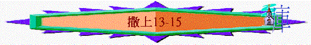

|
成 敗 與 興 衰 |
||
|
事
奉 |
民
族 |
君
王 |
|
撒上1-3 |
撒上4-7 |
撒上8-撒下24 |
一.掃羅的興衰(8-15)
C.掃羅失敗的原因—人的頑梗與神的厭棄(13-15)
a.沒等候心而不守神吩咐(13:1-14)
(1)爭戰中困難
(A)主動出擊
「掃羅登基年四十歲；作以色列王二年的時候，就從以色列中揀選了三千人：二千跟隨掃羅在密抹和伯特利山，一千跟隨約拿單在便雅憫的基比亞；其餘的人掃羅都打發各回各家去了。約拿單攻擊迦巴、非利士人的防營，非利士人聽見了。掃羅就在遍地吹角，意思說，要使希伯來人聽見。」13:1-3
〜「密抹」是便雅憫的小鎮，「迦巴」位於耶路撒冷東北偏北之處，今次掃羅分了兩隊兵，一隊由自己帶領，另一隊則由約拿單統領，攻擊非利士人的防營。
(B)敵人反攻
「非利士人聚集，要與以色列人爭戰，有車三萬輛，馬兵六千，步兵像海邊的沙那樣多，就上來在伯亞文東邊的密抹安營。」13:5
〜「伯亞文」位於密抺之西
(C)形勢險要
「以色列百姓見自己危急窘迫，就藏在山洞、叢林、石穴、隱密處，和坑中。」13:6
(2)懼怕中失腳
(A)看時間----已等很久----不再等
「掃羅照著撒母耳所定的日期等了七日。撒母耳還沒有來到吉甲，百姓也離開掃羅散去了。」13:8
〜掃羅要與非利士人爭戰之先，他要等待撒母耳來到吉甲獻祭呼求神，但他等了很久，撒母耳仍沒到，他的信心開始動揺
(B)看環境----形勢不利----感懼怕
「掃羅照著撒母耳所定的日期等了七日。撒母耳還沒有來到吉甲，百姓也離開掃羅散去了。」13:8
〜百姓散去：跟隨他的百姓散去，軍隊的人數更少
〜仇敵聚集：非利士人齊集在密抺，隨時有攻入的可能性
(C)看得失----大於神令----有行動
「掃羅說：「把燔祭和平安祭帶到我這裡來。」掃羅就獻上燔祭。」13:9
「所以我心裡說：恐怕我沒有禱告耶和華。非利士人下到吉甲攻擊我，我就勉強獻上燔祭。」撒母耳對掃羅說：「你做了糊塗事了，沒有遵守耶和華你神所吩咐你的命令。若遵守，耶和華必在以色列中堅立你的王位，直到永遠。」13:12-13
〜掃羅一直所注視的是爭戰中的得失，他認為要呼求神才可得勝，表面上這看法是也沒有錯，但若要得勝而忽略守神的吩咐，擅自獻祭(只有祭司可代百姓獻祭)就不合神的心意，守神的吩咐比得失應更重要，況且人若行得好，神一定會保守，人只管憑信等候，但看重勝敗的掃羅，已沒信心的，用一些似乎屬靈的行動，令自己更放心，其實是得罪了天上的神
(3)軟弱後結果----王位被取替
「現在你的王位必不長久。耶和華已經尋著一個合他心意的人，立他作百姓的君，因為你沒有遵守耶和華所吩咐你的。」」13:14
b.求勝心切而令百姓絆倒(13:15-14:52)
(1)勇敢靠神約拿單
(A)相信神能力
(a)有難處
＊敵人漸漸進逼
「有掠兵從非利士營中出來，分為三隊：一隊往俄弗拉向書亞地去，一隊往伯和崙去，一隊往洗波音谷對面的地境向曠野去。」13:17-18
〜「掠兵」專突擊的部隊
＊己方兵械缺乏
「掃羅和他兒子約拿單，並跟隨他們的人，都住在便雅憫的迦巴；但非利士人安營在密抹。」13:16
「那時，以色列全地沒有一個鐵匠；因為非利士人說，恐怕希伯來人製造刀槍。以色列人要磨鋤、犁、斧、鏟，就下到非利士人那裡去磨。但有銼可以銼鏟、犁、三齒叉、斧子，並趕牛錐。」13:19-21
〜原本有三千人的軍隊變成六百人
〜以色列地沒有鐵匠，即使要用鐵具作農務，也要到非利士人那裏尋求，而只有約拿單及掃羅有兵器
(b)仍有信
「有一日，掃羅的兒子約拿單對拿他兵器的少年人說：「我們不如過到那邊，到非利士人的防營那裡去。」但他沒有告訴父親。」14:1
「約拿單對拿兵器的少年人說：「我們不如過到未受割禮人的防營那裡去，或者耶和華為我們施展能力；因為耶和華使人得勝，不在乎人多人少。」拿兵器的對他說：「隨你的心意行吧。你可以上去，我必跟隨你，與你同心。」」14:6-7
〜有一日，約拿單與拿兵器的少年人說要過敵方的營進行攻擊，雖得他二人，但他仍信神的能力，信神使人得勝不在乎人多人少
(B)尋求神心意
「他們若對我們說：『你們站住，等我們到你們那裡去』，我們就站住，不上他們那裡去。他們若說：『你們上到我們這裡來』，這話就是我們的證據；我們便上去，因為耶和華將他們交在我們手裡了。」」約拿單就對拿兵器的人說：「你跟隨我上去，因為耶和華將他們交在以色列人手裡了。」」14:9-10
「二人就使非利士的防兵看見。非利士人說：「希伯來人從所藏的洞穴裡出來了！」防兵對約拿單和拿兵器的人說：「你們上到這裡來，我們有一件事指示你們。」14:11-12
〜約拿單與掃羅不同的地方是掃羅擅自獻祭，沒按神的意思，但約拿單在表面上雖私自上敵方陣地，但他也尋求神的心意，求神引證，若對方的人叫他們上到他們那裏去就是代表神將他們交在約拿單手中，果然神印證此事
(C)勇敢地爭戰
「約拿單和拿兵器的人起頭所殺的約有二十人，都在一畝地的半犁溝之內。
於是在營中、在田野、在眾民內都有戰兢，防兵和掠兵也都戰兢，地也震動，戰兢之勢甚大。」14:14-15
「掃羅和跟隨他的人都聚集，來到戰場，看見非利士人用刀互相擊殺，大大惶亂。」14:20
「那日，耶和華使以色列人得勝，一直戰到伯亞文。」14:23
〜約拿單知道是神的心意後，就與拿兵器的少年人勇敢殺入對方陣營，結果他們一下子殺了二十人，也令整個營地的軍兵也戰兢起來，甚至互相擊殺，神使他們得勝仇敵了
(2)求勝心切的掃羅王
(A)求勝心切
(a)欲抬約櫃----沒有神的吩咐
「在便雅憫的基比亞，掃羅的守望兵看見非利士的軍眾潰散，四圍亂竄。」14:16
「那時神的約櫃在以色列人那裡。掃羅對亞希亞說：「你將神的約櫃運了來。」掃羅正與祭司說話的時候，非利士營中的喧嚷越發大了；掃羅就對祭司說：「停手吧！」」14:18-19
〜掃羅見敵人潰敗，欲乘勢攻擊，在沒有神吩咐下，欲抬約櫃來(可能是想求問神或以為約櫃出來，選民必得勝)
〜但有譯本將約櫃譯為以弗得
(b)禁食求勝----沒憐憫的心腸
「掃羅叫百姓起誓說，凡不等到晚上向敵人報完了仇吃什麼的，必受咒詛。因此這日百姓沒有吃什麼，就極其困憊。」14:24
〜掃羅吩咐百姓起誓禁食，直到打勝仗後才可吃食，為何禁食，可能為了專心尋求神，或克苦己身要得神喜悅或專心打仗，但無論何原因，掃羅未體會軍兵的困憊，沒憐憫的心就下此不人道的命令
(B)令人跌倒
(a)令兒子陷險境
「約拿單沒有聽見他父親叫百姓起誓，所以伸手中的杖，用杖頭蘸在蜂房裡，轉手送入口內，眼睛就明亮了。」14:27
「掃羅對約拿單說：「你告訴我，你做了什麼事？」約拿單說：「我實在以手裡的杖，用杖頭蘸了一點蜜嘗了一嘗。這樣我就死嗎（或作：吧））？」掃羅說：「約拿單哪，你定要死！若不然，願神重重的降罰與我。」」14:43-44
〜約拿單不知道父親的命令，吃了一點蜜，掃羅知道後，竟為了自己糊塗的命令殺自己的兒子
(b)令百姓犯律法
「這日，以色列人擊殺非利士人，從密抹直到亞雅崙。百姓甚是疲乏，就急忙將所奪的牛羊和牛犢宰於地上，肉還帶血就吃了。有人告訴掃羅說：「百姓吃帶血的肉，得罪耶和華了。」掃羅說：「你們有罪了，今日要將大石頭滾到我這裡來。」掃羅又說：「你們散在百姓中，對他們說，你們各人將牛羊牽到我這裡來宰了吃，不可吃帶血的肉得罪耶和華。」這夜，百姓就把牛羊牽到那裡宰了。掃羅為耶和華築了一座壇，這是他初次為耶和華築的壇。」14:31-35
〜百姓因為甚是疲乏及飢餓，見到牛羊，就急忙宰於地，沒有好好處理而連肉帶血也吃了，在舊約的律法中，百姓是不可以吃血的，但因掃羅的不體裇，令他們因飢餓而犯了律法
〜掃羅知道後，急忙為百姓建壇，可能為了獻祭求神赦免之用
(C)神的回應----沒有回應
「掃羅求問神說：「我下去追趕非利士人可以不可以？你將他們交在以色列人手裡不交？」這日神沒有回答他。」14:37
〜神沒有回應掃羅，可能不單是因為在百姓中有人犯罪，更重要的是神不悅納掃羅所作的，所以沒有回應他的求問
(D)百姓保守
「我指著救以色列永生的耶和華起誓，就是我兒子約拿單犯了罪，他也必死。」但百姓中無一人回答他。掃羅就對以色列眾人說：「你們站在一邊，我與我兒子約拿單也站在一邊。」百姓對掃羅說：「你看怎樣好就去行吧！」掃羅禱告耶和華以色列的神說：「求你指示實情。」於是掣籤掣出掃羅和約拿單來；百姓盡都無事。掃羅說：「你們再掣籤，看是我，是我兒子約拿單」，就掣出約拿單來。」14:39-42
「百姓對掃羅說：「約拿單在以色列人中這樣大行拯救，豈可使他死呢？斷乎不可！我們指著永生的耶和華起誓，連他的一根頭髮也不可落地，因為他今日與神一同做事。」於是百姓救約拿單免了死亡。」14:45
〜掃羅從掣籤中得知兒子拿單擅自吃蜜，他欲殺約拿單，但百姓為約拿單求情，令他免被殺害
〜連百姓也看到神與約拿單同在，但掃羅卻看不到自己已被神遠離，所作的是得罪神
(E)繼續爭戰
「掃羅執掌以色列的國權，常常攻擊他四圍的一切仇敵，就是摩押人、亞捫人、以東人，和瑣巴諸王，並非利士人。他無論往何處去，都打敗仇敵。
掃羅奮勇攻擊亞瑪力人，救了以色列人脫離搶掠他們之人的手。」14:47-48
「掃羅平生常與非利士人大大爭戰。掃羅遇見有能力的人或勇士，都招募了來跟隨他。」14:52
(F)王族興旺
「掃羅的兒子是約拿單、亦施韋、麥基舒亞。他的兩個女兒：長女名米拉，次女名米甲。掃羅的妻名叫亞希暖，是亞希瑪斯的女兒。掃羅的元帥名叫押尼珥，是尼珥的兒子；尼珥是掃羅的叔叔。」14:49-50
c.貪愛美物而不行主命令(15)
(1)清楚的提醒
「撒母耳對掃羅說：「耶和華差遣我膏你為王，治理他的百姓以色列；所以你當聽從耶和華的話。萬軍之耶和華如此說：『以色列人出埃及的時候，在路上亞瑪力人怎樣待他們，怎樣抵擋他們，我都沒忘。現在你要去擊打亞瑪力人，滅盡他們所有的，不可憐惜他們，將男女、孩童、吃奶的，並牛、羊、駱駝，和驢盡行殺死。』」」15:1-3
「你要記念你們出埃及的時候，亞瑪力人在路上怎樣待你。他們在路上遇見你，趁你疲乏困倦擊殺你儘後邊軟弱的人，並不敬畏神。所以耶和華你神使你不被四圍一切的仇敵擾亂，在耶和華你神賜你為業的地上得享平安。那時，你要將亞瑪力的名號從天下塗抹了，不可忘記。」」申25:17-19
(A)清楚自己的身份
〜掃羅要知道自己擁有王位，不是從自己而來的，是神立他的，祂只是神的僕人----管理神的百姓，他不是統領者，神才是
(B)清楚屬靈的要則
〜作為管家及僕人，最重要是聽從主人的吩咐，掃羅雖為王，但他仍是被神委任的，他當行的----是要聽從天上主人----神的說話
(C)清楚現今的吩咐
〜昔日亞瑪力人惡待以色列人，所以神要向他們報仇，命令掃羅要滅盡他們所有的，不能愛惜，此命令是清楚而絕對的，也已提醒掃羅不能愛惜他們所擁有的一切人或物
(2)依舊的不從
「掃羅擊打亞瑪力人，從哈腓拉直到埃及前的書珥，生擒了亞瑪力王亞甲，用刀殺盡亞瑪力的眾民。掃羅和百姓卻憐惜亞甲，也愛惜上好的牛、羊、牛犢、羊羔，並一切美物，不肯滅絕。凡下賤瘦弱的，盡都殺了。」15:7-9
〜掃羅雖擊敗亞瑪力人，但沒有殺盡亞瑪力王及上好的美物，為甚麼？
(A)愛惜仇敵
(B)貪愛美物
(C)自欺欺人
「撒母耳到了掃羅那裡，掃羅對他說：「願耶和華賜福與你，耶和華的命令我已遵守了。」」15:13
〜掃羅竟然向撒母耳說：「耶和華的命令我已遵守了」他根本沒有完全遵守，卻自欺欺人
(D)切詞掩飾
「撒母耳到了掃羅那裡，掃羅對他說：「願耶和華賜福與你，耶和華的命令我已遵守了。」」15:11
「掃羅說：「這是百姓從亞瑪力人那裡帶來的；因為他們愛惜上好的牛羊，要獻與耶和華你的神；其餘的，我們都滅盡了。」撒母耳對掃羅說：「你住口吧！等我將耶和華昨夜向我所說的話告訴你。」掃羅說：「請講。」
」15:15-16
〜他將責任推卸與百姓(但神已指明撒母耳知是掃羅不遵守神的命令)更用屬靈的美好表現(獻上好的給神)作為掩飾他貪愛美物的罪行
(E)仍不知足
「撒母耳對掃羅說：「從前你雖然以自己為小，豈不是被立為以色列支派的元首嗎？耶和華膏你作以色列的王。」15:17
〜其實掃羅已是王了，神已將福氣、權柄賜給他，但他還不滿足，貪愛當滅之物
(3)嚴勵的責備
(A)真正的屬靈原則
「百姓卻在所當滅的物中取了最好的牛羊，要在吉甲獻與耶和華你的神。」撒母耳說：耶和華喜悅燔祭和平安祭，豈如喜悅人聽從他的話呢？聽命勝於獻祭；順從勝於公羊的脂油。」15:21-22
「行仁義公平比獻祭更蒙耶和華悅納。」箴21:3
〜掃羅說百姓將最好的留下用作獻祭，但撒母耳指出聽命勝於獻祭，神所喜悅的是人聽從祂的話，人若行得好，豈不蒙悅納
(B)嚴重的悖逆後果
「悖逆的罪與行邪術的罪相等；頑梗的罪與拜虛神和偶像的罪相同。你既厭棄耶和華的命令，耶和華也厭棄你作王。」15:23
「撒母耳對他說：「如此，今日耶和華使以色列國與你斷絕，將這國賜與比你更好的人。」15:28
(a)與拜偶像的罪相同
(b)耶和華厭棄他作王
(4)虛假的認罪
(A)繼續掩飾罪行
「掃羅對撒母耳說：「我有罪了，我因懼怕百姓，聽從他們的話，就違背了耶和華的命令和你的言語。」15:24
〜掃羅仍舊不承認自己貪愛亞瑪力人之牛羊，仍將責任推卸給百姓，說自己因懼怕百姓而違背神的命令
(B)仍然不肯自卑
「掃羅說：「我有罪了，雖然如此，求你在我百姓的長老和以色列人面前抬舉我，同我回去，我好敬拜耶和華你的神。」於是撒母耳轉身跟隨掃羅回去，掃羅就敬拜耶和華。」15:30-31
〜若掃羅的認罪是真實的，他應在眾人面前認自己的過犯，並帶領百姓哀求神的憐憫，但他卻沒有這漾做，不願人知道他被神厭棄，仍想撒母耳在人面前抬舉他
(5)神僕的工作
(A)行神吩咐
「撒母耳說：「要把亞瑪力王亞甲帶到我這裡來。」亞甲就歡歡喜喜地來到他面前，心裡說，死亡的苦難必定過去了。撒母耳說：「你既用刀使婦人喪子，這樣，你母親在婦人中也必喪子。」於是，撒母耳在吉甲耶和華面前將亞甲殺死。」15:32-33
(B)遠離掃羅
「撒母耳回了拉瑪。掃羅上他所住的基比亞，回自己的家去了。」15:34
(C)為羊悲傷
「撒母耳直到死的日子，再沒有見掃羅；但撒母耳為掃羅悲傷，是因耶和華後悔立他為以色列的王。」15:35